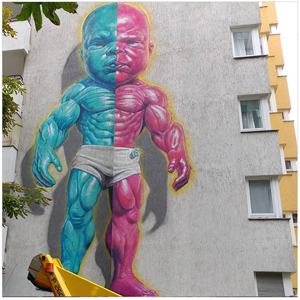
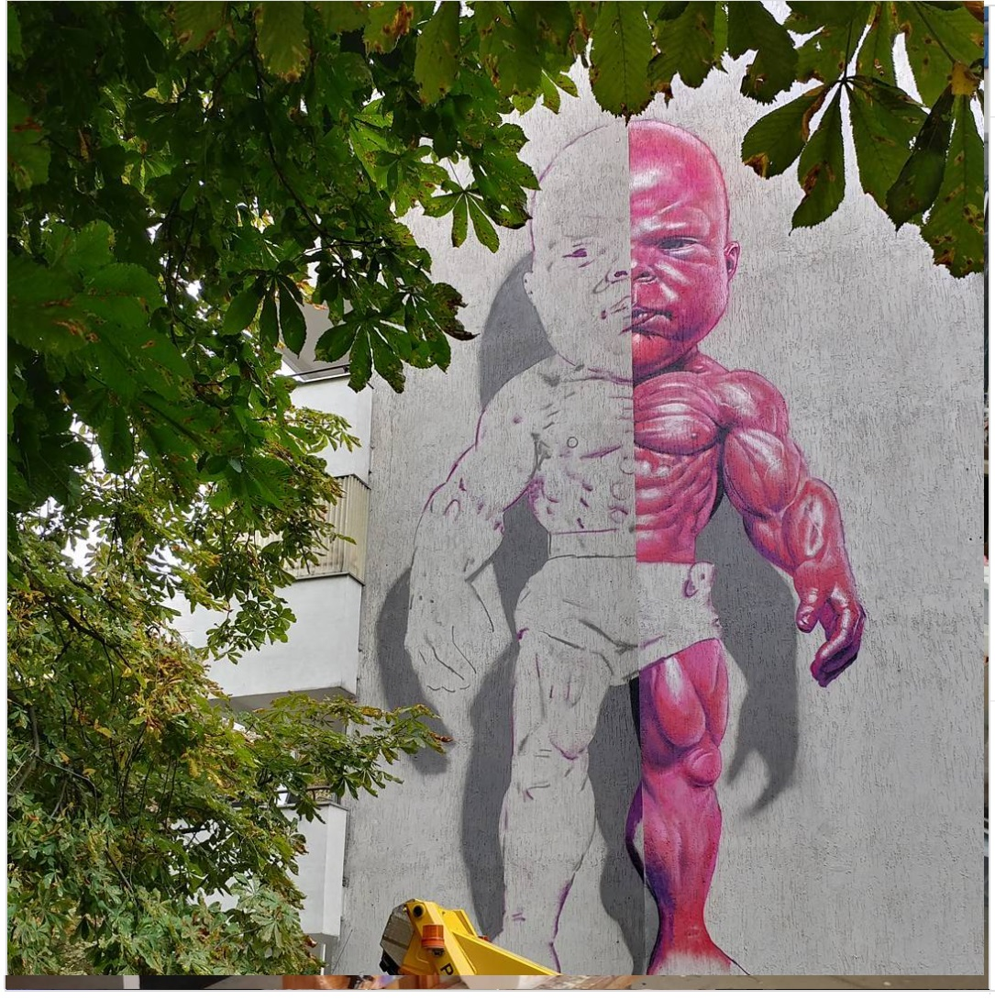

Berlin Wassertor, 2017
Mural by Ron English installed at Wassertorstraße 64 in Kreuzberg, Berlin, featuring the character Temper Tot.

Work details
Gallery

Mural by Ron English installed at Wassertorstraße 64 in Kreuzberg, Berlin, featuring the character Temper Tot.

